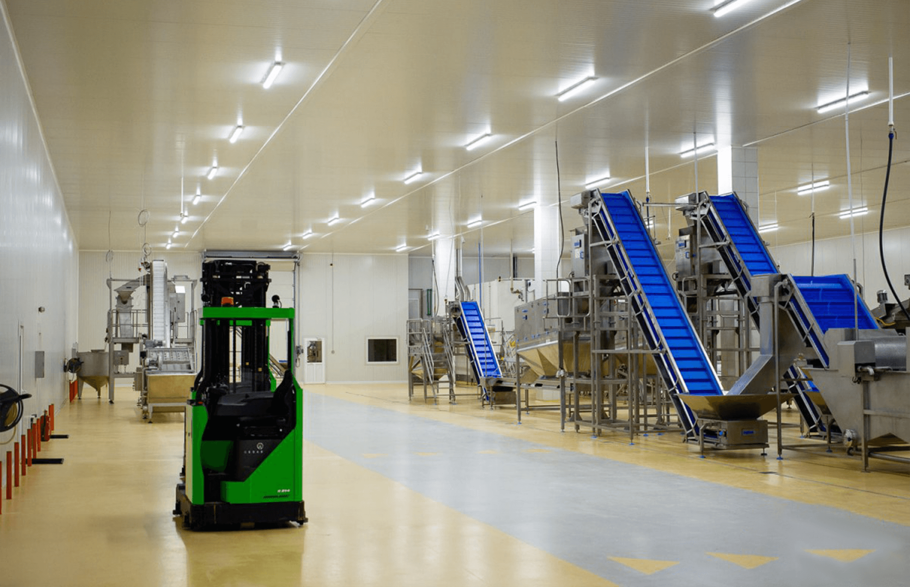
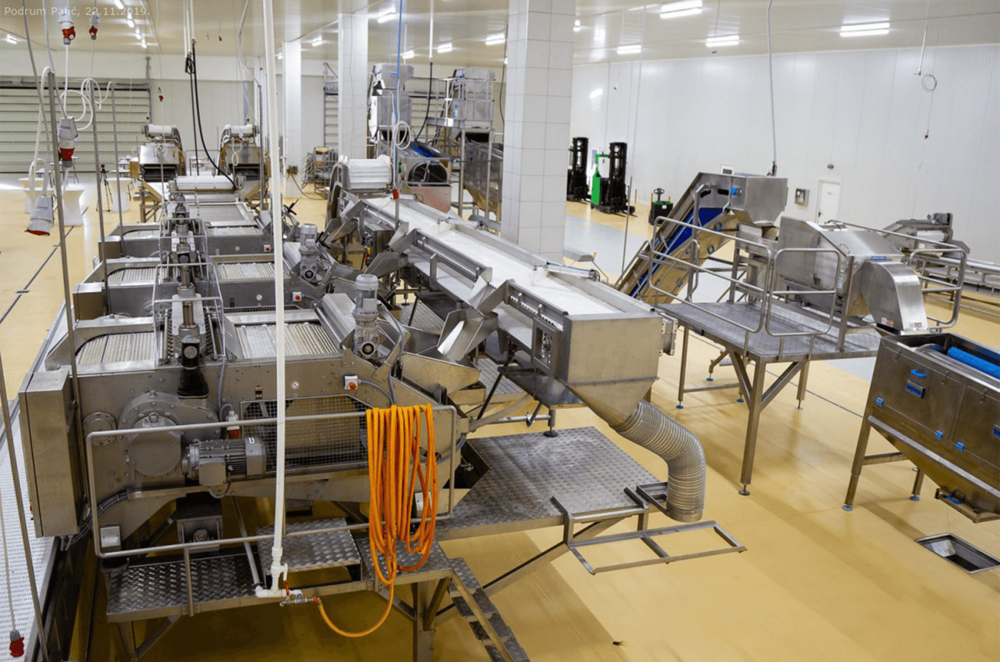
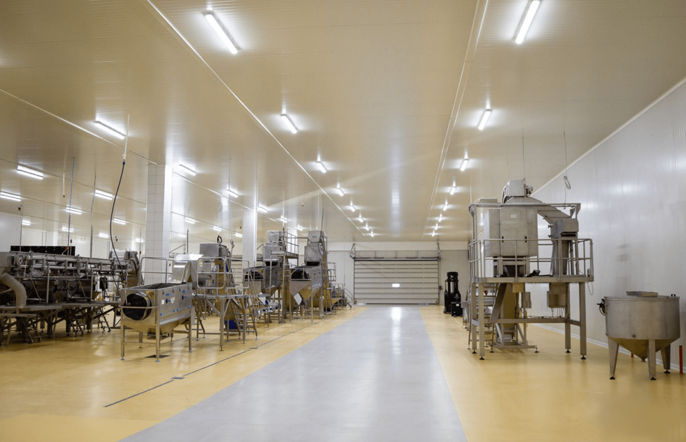
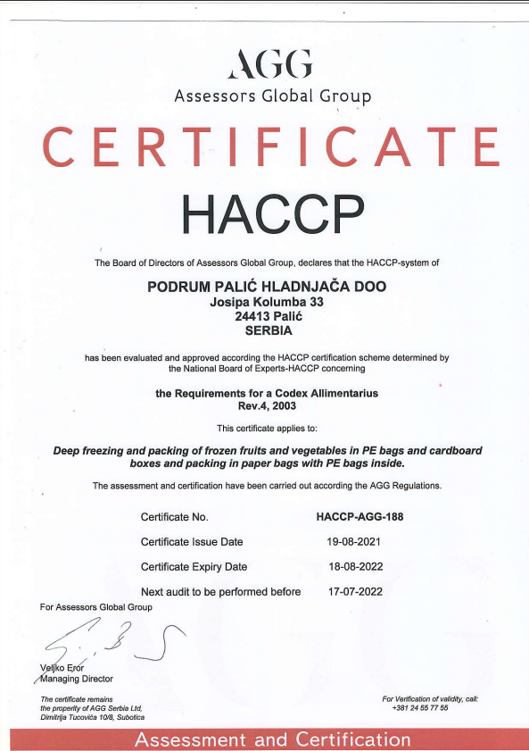
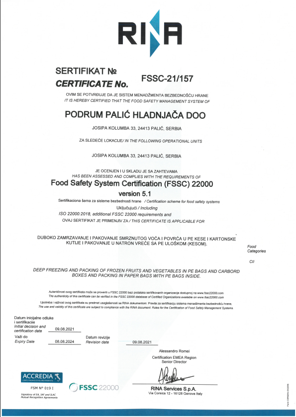
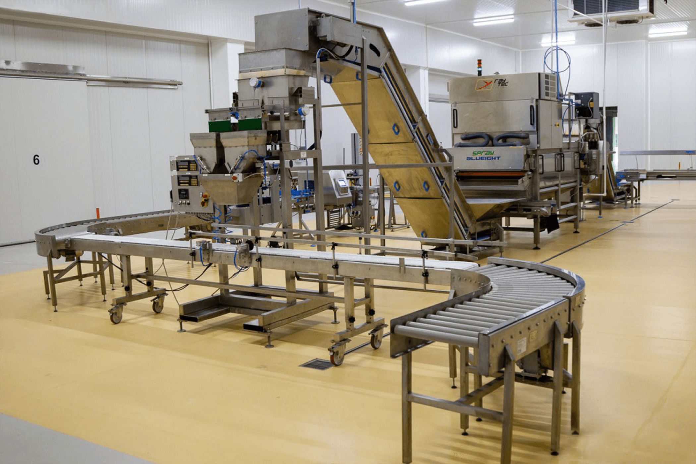
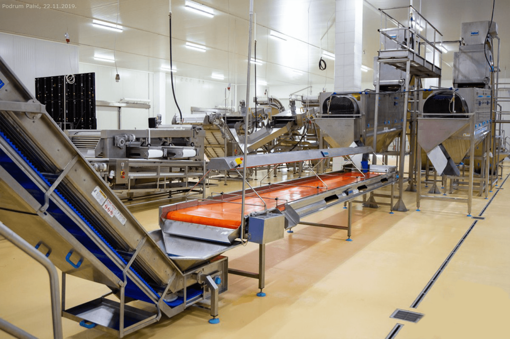
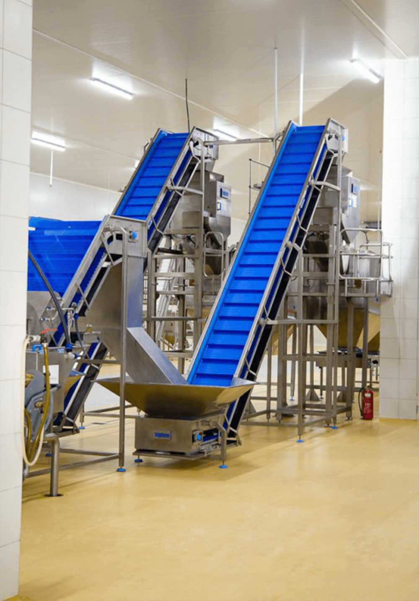
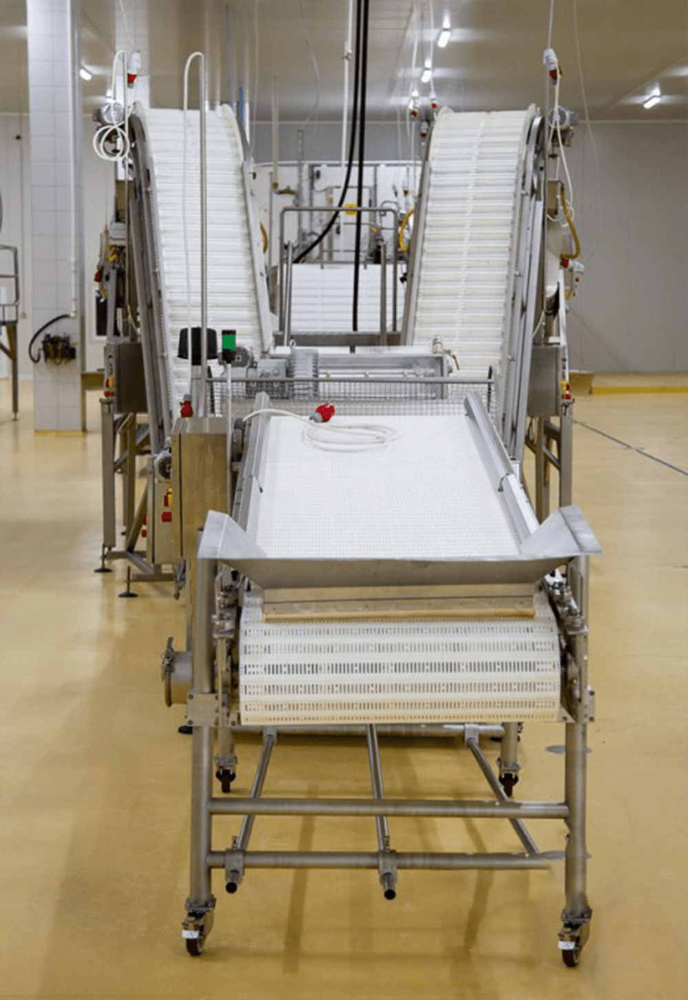

Podrum Palić hladnjača ima ukupan preradni kapacitet od 7.000 tona. Godišnje se proizvede 2.000 tona duboko zamrznute višnje i 5.000 tona duboko zamrznute paprike. Kapacitet skladištenja je 6.000 tona sa tendencijom daljeg proširenja u budućnosti.
Proizvodnja

Hladnjača raspolaže sa 8 komora u minusnom režimu rada i 3 komore u plus režimu rada. Celokupan proces proizvodnje je automatizovan i otpočinje linijama za prijem i pothladu sirovine, pranje, sortiranje, kalibriranje i zamrzavanje. Optimalan kapacitet zamrzavanja proizvoda je 5 t/h, a prerada se odvija na linijama renomiranih proizvođača.


Hrana se proizvodi korišćenjem najnovije tehnologije i u skladu sa najvišim standardima kvaliteta i bezbednosti hrane. Podrum Palić Hladnjača poseduje sledeće sertifikate: FSSC 22000 I HACCP


Naša ponuda obuhvata visoko kvalitetne proizvode, koji se zamrzavaju i pakuju u vrlo kratkom vremenskom roku. Pakovanje se vrši najsavremenijim metodama i opremom, kao što su: automatska vaga, optički sorteks i metal detektor. Mašina za optičko sortiranje i metal detektor obezbeđuju ujednačen kvalitet proizvoda i eliminišu strane primese. Proizvodi se skladište u komorama na paletnim regalima pri optimalnim temperaturama od –18°C do -24°C sve do momenta isporuke.



